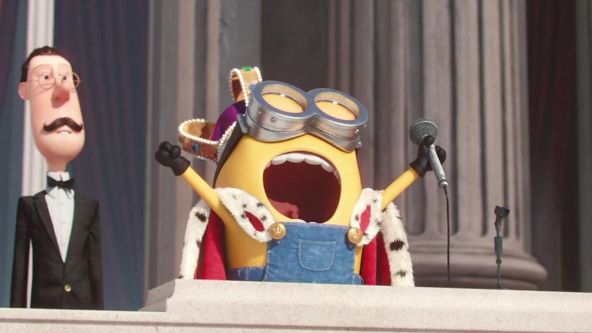
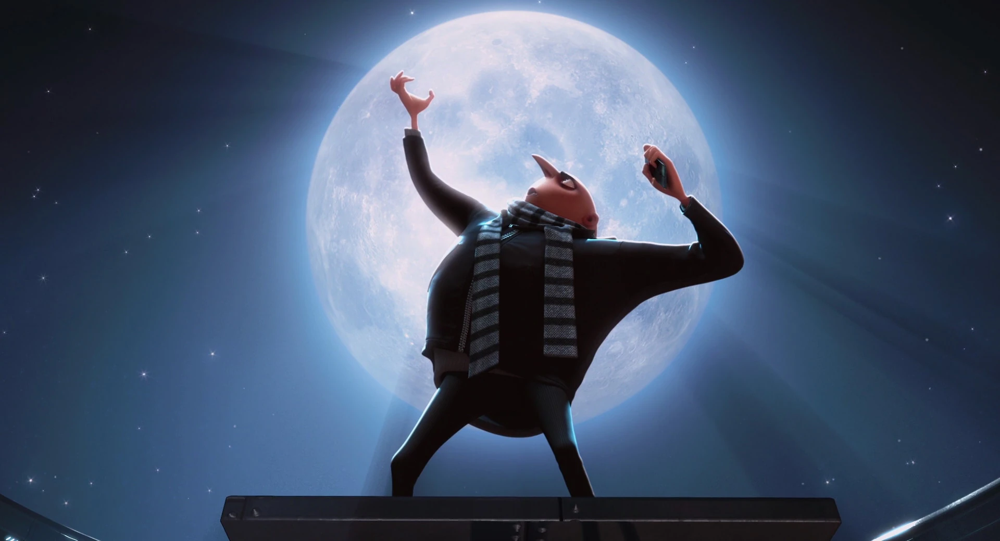
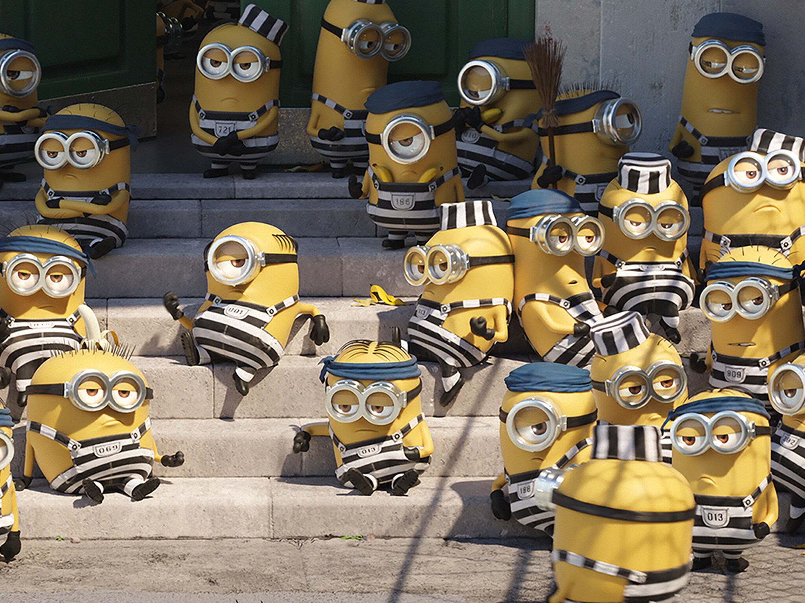

 After a roadtrip to Orlando, Florida to attend Villain Con; Kevin, Bob, and Stuart reportedly found themselves working for the villainess Scarlett Overkill. After the convention, Scarlett and the minions made their way to London, England where the minions partook in a runaway carriage ride through the streets of London with Her Majesty Queen Elizabeth II. After rising from the wreckage of the crashed royal carriage, Bob appeared to wander backwards onto a large stone where he proceeded to pull a sword out of; unknowingly fulfilling an old prophecy that stated whoever managed to removed the sword from that stone would become the new ruler of England.
Despite the language barrier, the people of England seemed to welcome His Majesty King Bob with open arms. Yet only 8 hours later, the palace released a statement declaring that King Bob has decided to abdicate the throne to villainess Scarlett Overkill. During the corination at the historic West Minster Abbey, a freak accident disrupted the ceremony when a giant metal chandelier fell from the ceiling of the Abbey onto Scarlett. After climbing out from under the fallen chendelier, the angry heir apparent accused former King Bob, Stuart, and Kevin of trying to murder her and called for their execution before launching herself into the air with the rocket boosters hidden under her skirt.
In a fit of post corinatation rage, Scarlett Overkill partook in a battle against a 40 foot tall Stuart through the streets of London before meeting her defeat. Damage during the battle was minimal, only sbout a dozen or so buildings were completely destroyed. In fear of another Minion or Villain uprising Parliamenthas decided to put Queen Elizabeth II back on the throne as the Queen of England. Scarlett Overkill and her husband are now awaiting trial for attempting to overthrow the monarchy and stealing crown jewels.

After another up and coming villain successfully managed to steal the Great Pyramids of Giza, Gru is left feeling like he needs to up his game. In an attempt to be the most notorious super viilain in the world, Gru decides that he, with the help of the minions and Dr.Nefario, is going to attempt to pull of the greatest heist known to man and STEAL THE MOON! However the plan is quickly thrown off track when another super villain, Vector, steals the SR-6 shrink ray Gru needs to complete his mission from Gru.
As a part of the plan to get the shrink ray back, Gru adopts 3 orphaned girl scouts, Margot, Edith, and Agnes. Gru uses their regular cookie selling to Vector as a way of infultrating Vector's hideout and getting the shrink ray back. Once he gets the shrink ray back, Dr.Nefario notices how close Gru and the minions have become with Margot, Edith, and Agnes and decides to return them to the orphange. With broken hearts, Gru and the minions continue on with the mission and manage to successfully steal the moon out of the sky.
Vector kidnaps Margot, Edith, and Agnes and Gru agrees to trade the moon for the girls before accidentally returning the Moon back to full size and sending it back to its original spot in outerspace; launching Vector into outerspace with it causing him to get stuck on the Moon. Gru and the minions then attend Margot, Edith, and Agnes' dance recitle before the minions hijack the stage and turn it into a disco.

After the minions agreed to quit working for the super villain Gru; whilst looking for a new master to serve the minions have seemed to have found their way into show business of sorts. After a magnificant performance on the singing competition show Sing!, the minions received rave reviews for their performance with mnay critics calling the minions performance "Inspired" and "The best thing I've seen all week!". However, promptly after the cameras were turned off, the minions were arrested for trespasing onto the Mondial Productions Studio filming lot and breaking into Studio B, where the show is filmed. After a speedy trial, the entire minion tribe was found guilty of their accused crimes. The minions are currently serving their prison sentence at the State Prison.
According to guards and former inmates at the State Prison, the minions have reportedly formed a small gang within the prison. The minions are rumoured to bully other prisoners, making then run away in fear. The minions are reportedly responsible for a large food fight that broke out in the prison cafeteria among the inmates. Eyewitnesses have recently reported seeing a large hot air balloon filled with minions flying over the prison walls. It is rumored that minions have escaped from prison, are currently on the run, and are wanted by authorities. We have reached out to the State Prison for comment but they declined to comment on the ongoing situation.